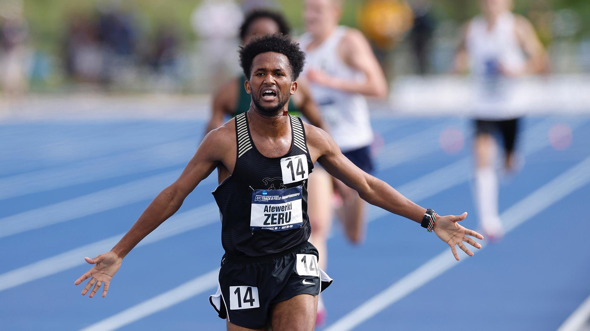

Afewerki Zeru

Country: United States
School: University of Colorado, Colorado Springs
DOB: October 10, 1997
Agent: Charles Paanakker - World Running, Netherlands
Personal Bests:
3000m - 8:04.74 (Indoor)
5000m - 13:44.58
10000m - 28:56.20
Half-Marathon - 1:02:40
NCAA DII National Champion 5000m. Multiple-time all-American in cross country and track. Recently qualified for the 2024 USA Olympic Trials Marathon and has one of the top times in 2023 in the USA for the half-marathon.
